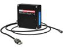

Parts Thickness Control
How to correctly measure thickness using a laser sensor
The Microtrak™ 4 is the best laser sensor for measuring height, thickness, displacement, vibration, and more... The Microtrak 4 provide data output and power through a single USB cable. With a sensor frame rate of 40kS/sec. and linearity of 0.03% FSO, this latest 1D laser sensor from MTI provides excellent speed and accuracy for even the most difficult applications. This easy-to-setup laser displacement sensor also has a built-in 5 color position indicator, making it easy to determine the initial gap setup and for monitoring rudimentary performance during machine maintenance without referring to an external controller.
Several Stand-Off Distances Available
| P/N | Image | Model | Product Description |
|---|---|---|---|
| 8000-6725 |  | FS-5 | Laser Head Mount and Positioner Fixture |
| 8000-6431 | FS6-1 | Right Angle Bracket | |
| 8000-6432 | FS6-2 | Right-Angle Bracket | |
| 8000-6925 | Power Supply | DIN mount (includes power cord and 24VDC harness) | |
| 8000-6227 | Digital Display | 2 channels (includes wire harness and 24VDC meter) |
Looking for similar or complementary products? Browse the following products.